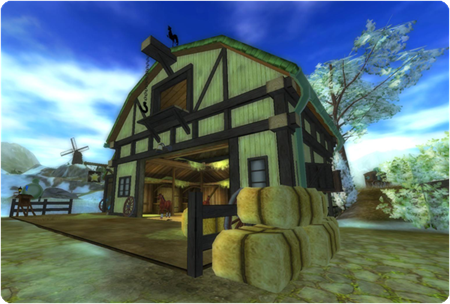
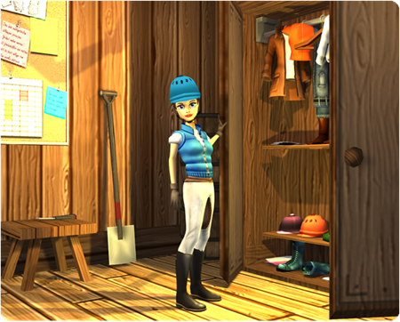
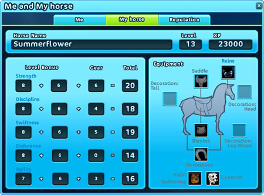

Helló!
A héten esedékes frissítés előtt szeretnénk először is beszámolni nektek a hamarosan érkező újdonságokról. Az egyik ilyen változás – amit bizonyára már kitaláltatok – a régóta várt háziállatok megjelenése! Emellett átalakítottuk az otthoni istálló megjelenését és funkcióit is. Az új istálló az első lépés azon az úton, amelynek végén egy teljesen a tiétek lesz az istálló!
Ma két interjút is készítettünk a Pixel Tales stúdió Star Stable fejlesztőivel, hogy megbeszéljük a közelgő változásokat. Elsőként a Star Stable játékigazgatója, Marcus Thorell következik.

Szia, Marcus! Mesélj nekünk egy kicsit magadról és a munkádról.
A Star Stable játékrendezője vagyok, és én rendelkezem a legátfogóbb rálátással Jorvik összes istállójára. Már a kezdetektől fogva a Star Stable világán dolgozom!
Mi történik jelenleg a jorviki istállókkal?
Arra az időre készülünk, amikor több lóval is rendelkezhetsz majd a Star Stable-ben. A legszembetűnőbb változás az lesz, hogy minden istállót felújítottunk, és a saját istálló működését teljesen átalakítottuk. Steve farmján és Pinta Erődben teljesen új istállók vannak.
Miben fog másképp működni mostantól a saját istálló?
Amikor belépsz a saját istállódba, az mostantól privát lesz. Egyedül leszel, és nem fogod látni a többi játékost. Megnézheted a ruháidat és a felszerelésedet, majd később, amikor a funkció hozzáadódik, gondozhatod is a lovadat. Ahhoz, hogy belépj a privát istállódba, el kell lovagolnod a saját istállódhoz, és egyszerűen rákattintanod az ajtóra. Természetesen bármikor válthatsz saját istállót, de ez 25 Star Coinba fog kerülni!

Egy kérdés, amire biztosak vagyunk benne, hogy mindenki szeretné tudni a választ: mikor lehet majd egynél több lovunk, és hogyan fog ez működni?
Tudjuk, hogy mindenki nagyon szeretné, ha több lova lehetne. Mi is így vagyunk ezzel. Egyelőre még nincs 100%-ig biztos megjelenési dátumunk a második lovakra, de biztosak vagyunk benne, hogy jövő év elején érkezni fognak!
A második lovak a boltokban lesznek elérhetőek?
A jelenlegi tervek szerint a játékosok meglátogathatnak majd néhány különböző lópiacot, így a választás előtt megnézhetik a rendelkezésre álló lovakat a valóságban. Amikor kiválasztanak egy új lovat, azt lószállítóval szállítják a saját istállójukba, amennyiben van szabad helyük.

A lovak cseréjéhez meg kell látogatnod a saját istállódat, és el kell hoznod a másik lovadat?
Így van. Ha felhívod a szállítót, azonnal elvisz a saját istállódba, így gyorsan és egyszerűen cserélhetsz lovat.
Hogyan fog működni a lovas felszerelés, a ló XP és a ló gondozása?
Akárcsak a való világban, minden ló egyedi. Minden lovat külön-külön kell gondoznod. Ugyanez vonatkozik az XP-re és a ló edzésére is, hogy szintet lépjen. Ugyanazon a napon különböző lovakkal is részt vehetsz ugyanazon a versenyen. Több mint egy ló gondozása és edzése nem könnyű, akárcsak a való életben!
Izgalmas! Alig várjuk ezeket az új változásokat. Van még valami, amit elárulhatsz nekünk a Jorvikban hamarosan bekövetkező újdonságokról?
Jelenleg rengeteg minden történik! Teljes gőzzel dolgozunk a Star Stable új tartalmain. A szokásos heti frissítések mellett – amelyek általában új ruhákat, felszereléseket, új versenyeket és küldetéseket tartalmaznak – új funkciók bevezetésén is dolgozunk, és új területek megnyitására készülünk. A következő területek a Jorvik Lovarda és a Rejtett Dinoszaurusz-völgy lesznek... Még nem tudjuk, mikor nyitjuk meg őket. Emellett új, izgalmas játékfunkciókat is készítünk, amelyek tovább javítják a játékélményt minden nagyszerű játékosunk számára!
Köszönjük az interjút, Marcus!
Köszönöm!